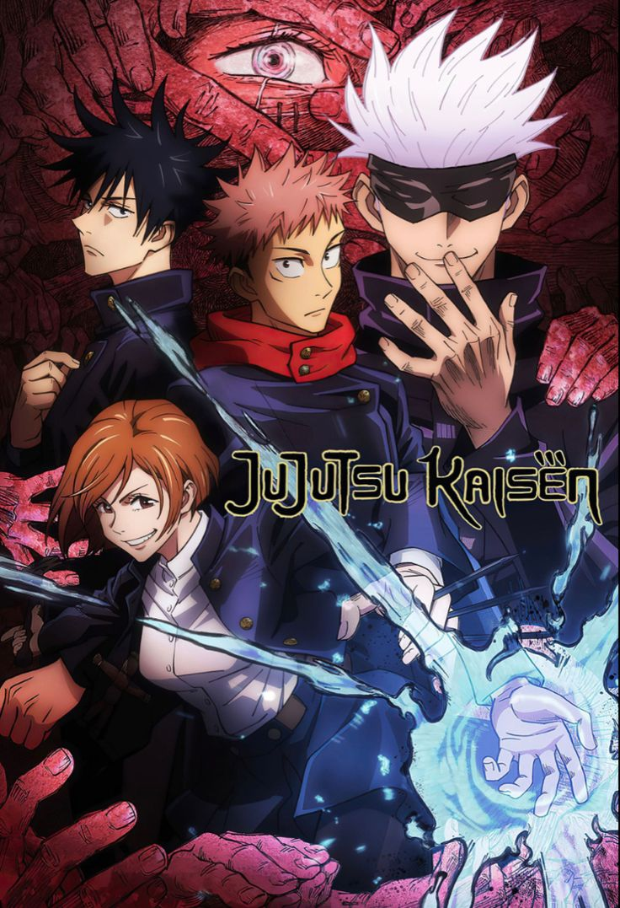
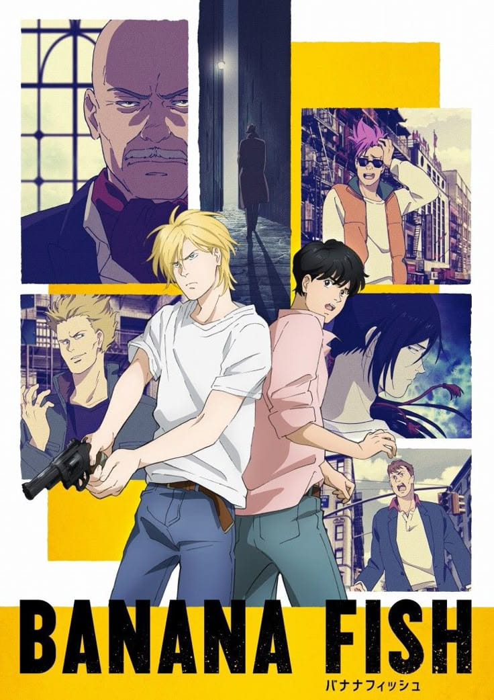
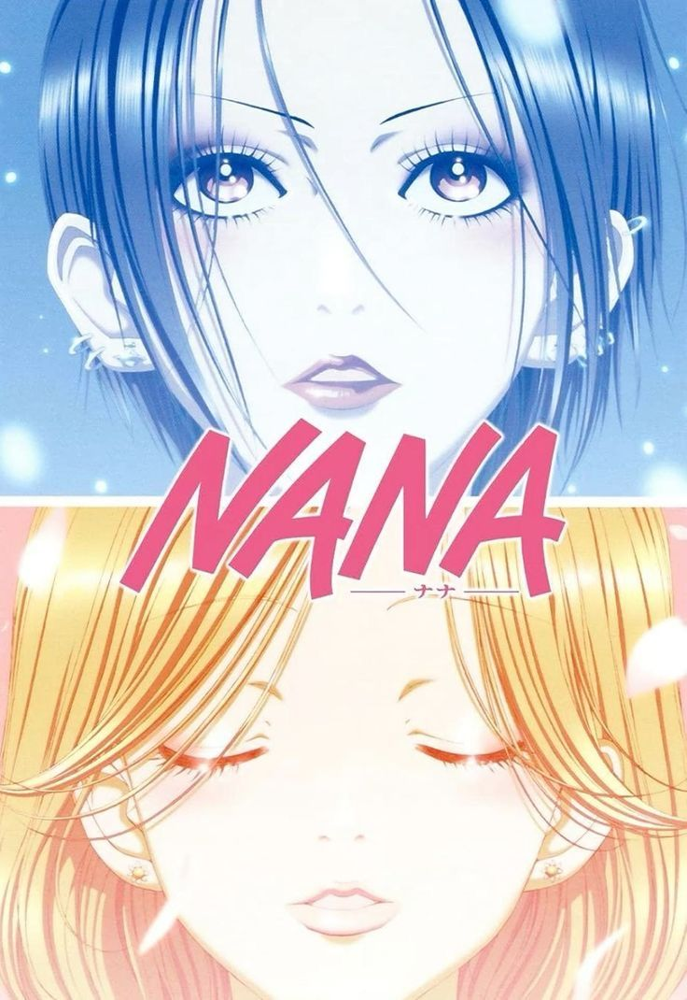
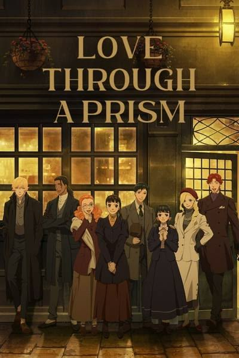

Mis Animes Favoritos
Administra y personaliza tu top personal de anime
1

Jujutsu Kaisen
⭐⭐⭐⭐⭐
Yuji Itadori se traga un dedo maldito para salvar a sus amigos y se convierte en el recipiente de Sukuna, entrando al mundo de los hechiceros jujutsu.
2

Banana Fish
⭐⭐⭐⭐⭐
Ash Lynx, un joven líder de pandillas en Nueva York, conoce al fotógrafo japonés Eiji Okumura mientras investiga la misteriosa droga 'Banana Fish'.
3

Nana
⭐⭐⭐⭐⭐
Dos chicas con el mismo nombre y personalidades opuestas se cruzan en un tren hacia Tokio y terminan compartiendo departamento y sus vidas amorosas.
4

Love Through a Prism
⭐⭐⭐⭐⭐
Una cautivadora historia romántica que explora los sentimientos juveniles y las distintas perspectivas del amor a través de un prisma de emociones.